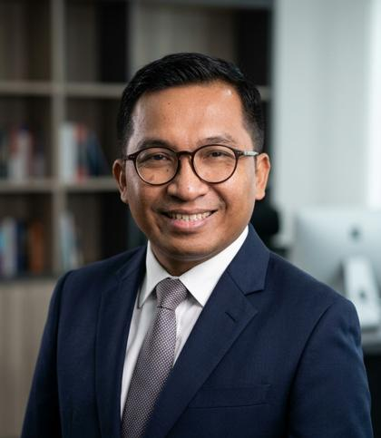

Persekutuan firma advokat yang tumbuh bertahap: pajak, kepabeanan, investasi, dan korporasi lebih dulu; teknologi teregulasi kemudian. Bekerja per tahap, bayar per perkara.An advocates' general partnership built in stages: tax, customs, investment, and corporate first; regulated technology afterwards. Work by stage, pay per case.
Jadwalkan sesi pemetaan 30 menit (Rp 100.000)Book a 30-minute scoping session (Rp 100.000)Keberatan, banding Pengadilan Pajak, pengembalian; pendampingan hukum proses kepabeanan (bukan kegiatan PPJK).Objections, Tax Court appeals, refunds; legal assistance on customs processes (not PPJK activities).
Litigasi, PHI, arbitrase; laporan untuk RUPS dan Komisaris.Litigation, industrial relations, arbitration; reports for the GMS and Board of Commissioners.
PMA/PMDN melalui BKPM/OSS-RBA, due diligence, dokumen korporasi.PMA/PMDN via BKPM/OSS-RBA, due diligence, corporate documents.
Opini hukum, struktur SPV/TSPV, pendampingan Regulatory Sandbox OJK.Legal opinions, SPV/TSPV structuring, OJK Regulatory Sandbox assistance.
Penasihat hukum untuk keluarga pengusaha dan family office: harta perkawinan, waris, tata kelola keluarga.Legal counsel for business families and family offices: marital property, succession, family governance.
Setiap perkara atau proyek menjadi rencana bertahap. Setiap tahap punya keluaran, honorarium Rupiah yang disepakati tertulis, dan titik keputusan Anda.Every matter or project becomes a staged plan. Each stage has deliverables, a Rupiah fee agreed in writing, and a decision point for you.
Verifikasi fakta dan cek konflik kepentingan sebelum surat penugasan.Fact verification and conflict check before any engagement letter.
Ruang lingkup, honorarium, batas peran tertulis.Scope, fees, and role boundaries in writing.
Keluaran jelas dan satu stage gate per fase.Clear deliverables and one stage gate per phase.
Fase berikut hanya dengan persetujuan Anda.Next phase only with your approval.
Analisis jalur regulasi, struktur SPV/TSPV, opini hukum.Regulatory pathway analysis, SPV/TSPV structure, legal opinion.
Hubungan firma dengan Arsiva dan Certiva: peran terpisah, afiliasi diungkapkan.The firm's relationship with Arsiva and Certiva: separated roles, disclosed affiliation.

Managing Partner · Advokat PERADI, NIA 19.02393, DPC Jakarta SelatanPERADI Advocate, NIA 19.02393, South Jakarta Chapter
Pemimpin Law Firm sejak 2019 (tercantum dalam akta). Berpraktik di perpajakan, kepabeanan, investasi, dan hukum korporasi; memimpin Divisi Tokenisasi sejak Januari 2025. Juga pendiri Arsiva dan Certiva (afiliasi terpisah).Head of the Law Firm since 2019 (named in the deed). Practices in taxation, customs, investment, and corporate law; leads the Tokenization Division since January 2025. Also founder of Arsiva and Certiva (separate affiliates).
Epicentrum Walk, Jl. H.R. Rasuna Said, Jakarta Selatan